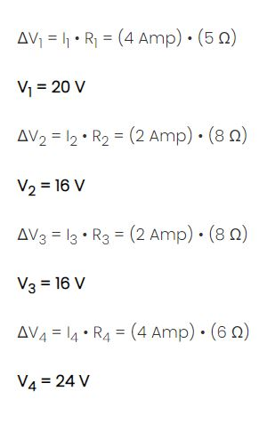

¿Cuáles son las Características de un Circuito Mixto?
Las características del Circuito Mixto son las siguientes: Se caracteriza por estar compuesta por la combinación de circuitos en serie y paralelo. El voltaje varia dependiendo de la caida de tensión entre cada nodo. La intensidad de la corriente varía dependiendo de la conexión. Existen dos formulas para calcular la resistencia total del circuito mixto.
Diferencias entre un circuito en serie y un circuito en paralelo
Un circuito en serie y uno en paralelo constituyen modelos contrapuestos. Sus valores, de hecho, se calculan empleando las ecuaciones contrarias. Sin embargo, la gran y sustancial diferencia entre ambos tiene que ver con el flujo sostenido de la corriente eléctrica. Mientras que un circuito en paralelo permite a cada terminal gozar de un flujo eléctrico propio, esto es, permitiéndole funcionar separadamente del resto y por ende no perder corriente si el terminal vecino se daña o se interrumpe, los circuitos en serie, en cambio, dependen del correcto funcionamiento del vecino para seguir operando, ya que la salida de aquél es la entrada de éste.
¿Cómo Resolver un Circuito Mixto?
El siguiente ejemplo es el caso más fácil para calcular un circuito mixto: los resistores colocadas en paralelo tienen la misma resistencia. El objetivo del análisis es determinar la corriente y el voltaje en cada resistor.
Calculando la Resistencia Total de un Circuito Mixto Como ya sabemos, el primer paso es simplificar el circuito reemplazando las dos resistencias paralelas con una sola resistencia que tenga una resistencia equivalente. Dos resistencias de 8 Ω en serie son equivalentes a una sola resistencia de 4 Ω. Por lo tanto, las dos resistencias de ramificación (R2 y R3) se pueden reemplazar por una sola resistencia equivalente a 4 Ω. Esta resistencia de 4 Ω está en serie con R1 y R4. Por lo tanto, la resistencia total es:

Cómo Calcular la Corriente Total de un Circuito Mixto
Ahora se puede usar la ecuación de la Ley de Ohm (ΔV = I • R) para determinar la corriente total en el circuito. Al hacerlo, deberá usarse la resistencia total y el voltaje total (o voltaje de la batería).
ITot = ΔVTot / RTot = (60 V) / (15 Ω)
ITot = 4 Amp
El cálculo de corriente de 4 amperios representa la corriente en la ubicación de la batería. Sin embargo, las resistencias R1 y R4 están en serie y la corriente en resistencias conectadas en serie es igual en todas partes. Así,
ITot = I1 = I4 = 4 Amp
Para ramas paralelas, la suma de la corriente en cada rama individual es igual a la corriente fuera de las ramas. Por lo tanto, I2 + I3 debe ser igual a 4 Amp. Hay un número infinito de valores posibles de I2 e I3 que satisfacen esta ecuación. Como los valores de resistencia son iguales, los valores actuales en estas dos resistencias también son iguales. Por lo tanto, la corriente en las resistencias 2 y 3 es igual a 2 Amp.
Calculando el Voltaje utilizando la Ley de Ohm
Ahora que se conoce la corriente en cada ubicación de resistencia individual, se puede usar la ecuación de la ley de Ohm (ΔV = I • R) para determinar la caída de voltaje en cada resistencia. Estos cálculos se muestran a continuación.
